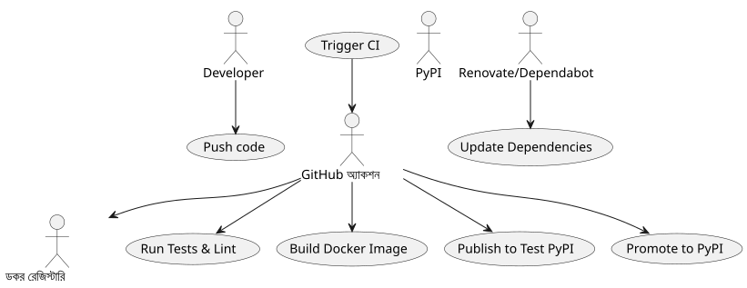

CI/CD Python – অংশ ৩: PoeTry, Docker ও উন্নত প্রকাশের সাথে আরও অগ্রসর হইয়া
Publié le 19 July 2025
এই সিরিজের πρώτο দুটি অংশে, আমরা : - একটি কার্যকর CI/CD পাইপলাইন স্থাপন করা হয়েছে একটি পাইথন অ্যাপ্লিকেশনের জন্য GitHub Actions এবং PyPI ব্যবহার করে। - এই পাইপলাইনটি মাল্টি-ভার্সন টেস্ট, টেস্ট পিপিআই এর মাধ্যমে ক্রমবর্ধমান প্রকাশ এবং গুণগত ও নিরাপত্তা সরঞ্জাম সহ উন্নত করা হয়েছে।
এই তৃতীয় অংশে, আমরা যাবPyPI-এ সহজ প্রকাশের চেয়ে বেশিএকটি পুরো, মজবুত ও পেশাদার CI/CD পাইপলাইন তৈরি করতে : - কবিতাএকটি আধুনিক প্যাকেজিংয়ের জন্য এবং একটি অপ্টিমাইজড নির্ভরতা ব্যবস্থাপনার জন্য. - Dockerপুনরাবৃত্তি যোগ্য এবং মাল্টি-প্ল্যাটফর্ম বিল্ড তৈরি করতে - শর্তীয় প্রকাশrilিজ ক্যান্ডिडেটদের মতো সzenারリオ পরিচালনা করার জন্য। - স্বয়ংক্রিয়করণ সরঞ্জাম(Renovate, Dependabot) পাইপলাইনকে আপ-টু-ডেট রাখে কোনো প্রচেষ্টা ছাড়াই।
Poetry-এর সাথে একীকরণ
Poetry (setup.py, requirements.txt) প্রাচীন প্যাকেজিং টুলগুলোকে প্রতিস্থাপন করে, নির্ভরশীলতা ও বিল্ড ব্যবস্থাপনাকে কেন্দ্রিক করে, মধ্যে`pyproject.toml`.
Poetry ইন্সটলেশন
# Installer Poetry
curl -sSL https://install.python-poetry.org | python3 -
# Vérifier la version
poetry --versionপ্রকল্পের শুরু
# Initialiser un nouveau projet avec Poetry
poetry init
# Suivre l'assistant pour renseigner : nom, version, description, licence, dépendances.এটি একটি ফাইল তৈরি করে`pyproject.toml`:
[tool.poetry]
name = "playlist-downloader"
version = "0.1.0"
description = "CLI tool for managing YouTube playlists"
authors = ["Christophe Hérolivier <cheroliv@example.com>"]
[tool.poetry.dependencies]
python = ">=3.8"
typer = "^0.9.0"
yt-dlp = "^2023.7.6"
google-api-python-client = "^2.0.0"
google-auth-oauthlib = "^1.0.0"
[tool.poetry.group.dev.dependencies]
pytest = "^7.0"
mypy = "^1.0"
bandit = "^1.7"
safety = "^2.3"
black = "^23.0"
ruff = "^0.1"নির্ভরতা যোগ ও ইনস্টলেশন
poetry add typer yt-dlp google-api-python-client google-auth-oauthlib
poetry add --group dev pytest mypy black bandit safety ruffপ্রকাশ Poetry-এর সাথে
Poetry প্রকাশনাটি নেটিভভাবে পরিচালনা করতে:
# Publication sur Test PyPI
poetry publish --build --repository test-pypi
# Publication sur PyPI
poetry publish --buildএই কমান্ডটি স্বয়ংক্রিয়ভাবে উপস্থিত তথ্য ব্যবহার করে`pyproject.toml`.
ডকার দিয়ে পুনরুত্পাদনযোগ্য বিল্ড
বিকাশ, CI/CD এবং উৎপাদনে একই চালান নিশ্চিত করতে, Docker সম্পূর্ণরূপে Poetry-এর সাথে একীভূত হয়।
Dockerfile উদাহরণ
FROM python:3.11-slim
WORKDIR /app
COPY pyproject.toml poetry.lock ./
RUN pip install poetry
RUN poetry install --no-root --only main
COPY . .
CMD ["poetry", "run", "python", "cli.py"]এটি নিশ্চিত করে : - একটি ফ্রোজেন Python পরিবেশ। - বন্ধ করা নির্ভরতা মাধ্যমে`poetry.lock`. - ডকার সমর্থিত সিস্টেমে চলার জন্য উপযোগী একটি ছবি.
GitHub Actions-এ ইন্টিগ্রেশন
name: Docker Build
on:
push:
branches: [main]
jobs:
build-docker:
runs-on: ubuntu-latest
steps:
- uses: actions/checkout@v4
- name: Build Docker image
run: docker build -t ghcr.io/${{ github.repository }}:latest .
- name: Push Docker image
run: docker push ghcr.io/${{ github.repository }}:latestশর্তাধীন প্রকাশ
Dans un pipeline professionnel, il faut pouvoir publier uniquement dans certains cas :
একটি পেশাগত পাইপলাইনে, কেবল কিছু ক্ষেত্রে প্রকাশ করতে হ’ব : - রিলিজ ক্যান্ডিডেটস Test PyPI-এর জন্য - স্থির সংস্করণ PyPI-এ - Builds ডককার শুধুমাত্র ট্রিগার করা`main`.
- name: Publish to Test PyPI
if: contains(github.ref, '-rc')
run: poetry publish --build --repository test-pypi
- name: Publish to PyPI
if: startsWith(github.ref, 'refs/tags/v')
run: poetry publish --buildএই পদ্ধতিটি আকস্মিক প্রকাশনাগুলি এড়িয়ে যায়।
Renovate এবং Dependabot দিয়ে নির্ভরতা অটোমেশন
আপনার নির্ভরতাগুলি প্রাচীন না হওয়া থেকে বিরত রাখুন, স্বয়ংক্রিয় আপডেটের সরঞ্জামগুলোকে অন্তর্ভুক্ত করুন।
Dependabot
version: 2
updates:
- package-ecosystem: "pip"
directory: "/"
schedule:
interval: "weekly"
- package-ecosystem: "github-actions"
directory: "/"
schedule:
interval: "weekly"Dependabot প্রতিসপ্তাহ PR খুলে Python এবং GitHub Actions এর নির্ভরতা আপডেট করার জন্য।
নবীকরণ করা
{
"extends": ["config:base"],
"packageRules": [
{
"matchManagers": ["pip"],
"groupName": "python-dependencies",
"schedule": ["before 6am on monday"]
}
]
}Renovate আরও সূক্ষ্ম নিয়ন্ত্রণের অনুমতি দেয়: নির্ভরতাগুলোর গোষ্ঠীভুক্তি, পরিকল্পনা এবং উন্নত বিধি।
PlantUML ডায়াগ্রাম
ব্যবহার কেস – উন্নত CI/CD

ক্রম – শর্তাধীন প্রকাশনা

রাজ্য – পাইপলাইন CI/CD

ডিপ্লয়মেন্ট – CI/CD আর্কিটেকচার
উপসংহার
এই তৃতীয় অংশে, আমরা দেখেছি কিভাবে : কবিতাকে ব্যবহার করে পাইথন প্যাকেজিং আধুনিকীকরণ করুন। - ডকারের মাধ্যমে পুনরুত্পাদনযোগ্য বিল্ড নিশ্চিত করুন। - একটি শর্তাধীন প্রকাশন স্থাপন করা। - ডিপেন্ডেন্সি আপডেট স্বয়ংক্রিয়করণ
আপনি এখন একটি CI/CD পাইপলাইন পেয়েছেন।সম্পূর্ণ, উদ্যোগীকৃত এবং নিরাপদ, আপনার প্রকল্পগুলোকে উন্নয়ন করতে প্রস্তুত.